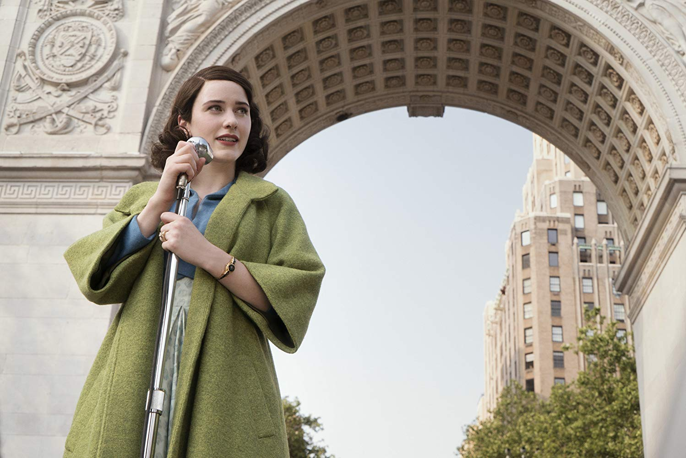

Удивительная Миссис Мэйзел
1956 год.
У Мириам Мэйзел есть всё, о чем только может мечтать женщина (того времени): двое прекрасных детей, роскошная квартира в самом престижном районе Нью-Йорка, хорошо зарабатывающий любящий муж и чудесные еврейские родители (живущие этажом ниже, чтобы если что можно было на бэбиситерах сэкономить и прям напрямую бабушке с дедушкой сдать).
У мужа Мириам есть мечта – он хочет быть королем комедии, главным стенд-ап комиком Нью-Йорка. Только проблема в том, что мечта есть, а таланта – нет. Вообще. И вот, в силу определенных обстоятельств, муж уходит, оставляя миссис Мэйзел у разбитого корыта. И тут оказывается, что именно у неё есть невероятный комический талант и она, оказавшись одна на сцене, способна творить настоящие чудеса…
«Невероятная Миссис Мэйзел» - новый хит от Amazon и очередной крутой сериал про сильную самостоятельную женщину. История превращения домохозяйки в королеву стенд-ап сцены Нью-Йорка 50х годов. Сериал с одной стороны немного неровный, но с другой – бесконечно обаятельный и очень смешной и заслуженно получивший свои восемь премий "Эмми", включая лучшую женскую роль и лучший комедийный сериал.
Немного неровный в первую очередь за счет некоторой театральности происходящего: диалоги местами чрезмерно литературные, сцены – излишне срежессированные без доли живой эмоции (хотя тем не менее это всегда очень остроумные репризы). Костюмы и мир «Невероятная Миссис Мэйзел» нельзя спутать с живым Нью-Йорком, это красочная красивая стилизация, но, повторюсь, это очень условный минус.
Все эти мелочи меркнут по сравнению с главными плюсами: невероятного обаяния героиней и очень правильной интонацией истории. Миссис Мэйзел – идеальная женщина. Сексуальная, умная, красивая, решительная и с невероятным чувством юмора. И её история захватывает моментально.
Мешает в первую очередь её муж – человек отрицательного обаяния и ограниченного таланта. Невозможно отделаться от постоянно возникающего вопроса – что такая женщина может с этим недоразумением делать? С другой стороны, в этом тоже есть своего рода смысл: времена такие, что даже самый никчемный мужчина считается удачным уловом просто по факту того, что он мужчина.
Но самое (для меня) важное в сериале – это главная мысль: юмор – это производная жизненных испытаний. Самые смешные шутки рождаются из тяжелых переживания, из страданий и сложностей. Человек счастливый и удовлетворенный не способен созидать, это удел исключительно людей остро переживающих. И в сериале «Невероятная Миссис Мэйзел» эта важная мысль показана максимально наглядно и тонко. Когда ушел муж, когда оказалось, что счастливая обеспеченная жизнь была лишь иллюзией – именно тогда рождаются самые смешные монологи и самые остроумные шутки. Хотя казалось бы.
И именно вот этот острый и неожиданный взгляд на природу и суть юмора, плюс обаяние артистов и делают сериал абсолютно обязательным к просмотру.